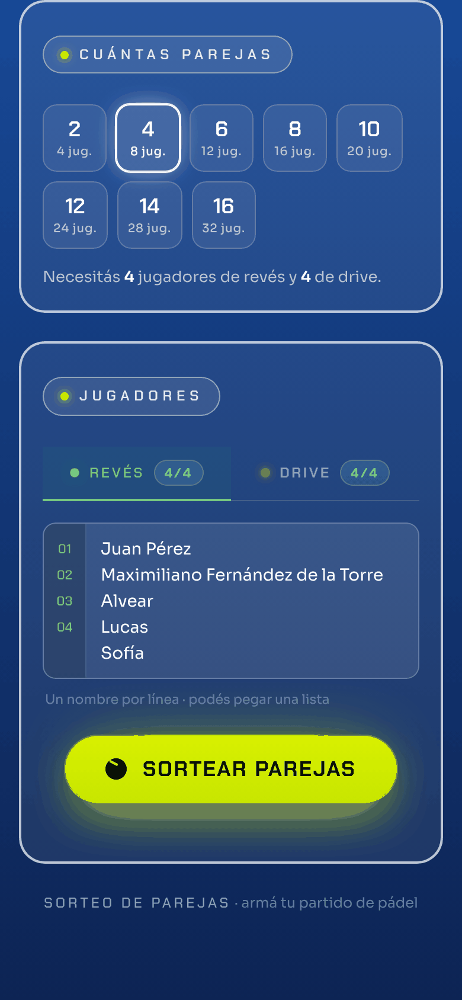
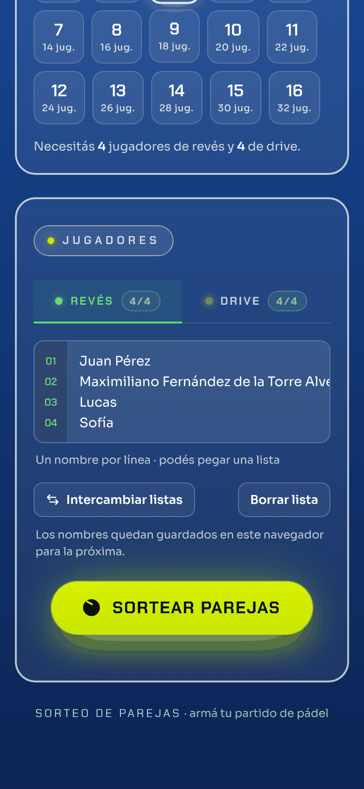
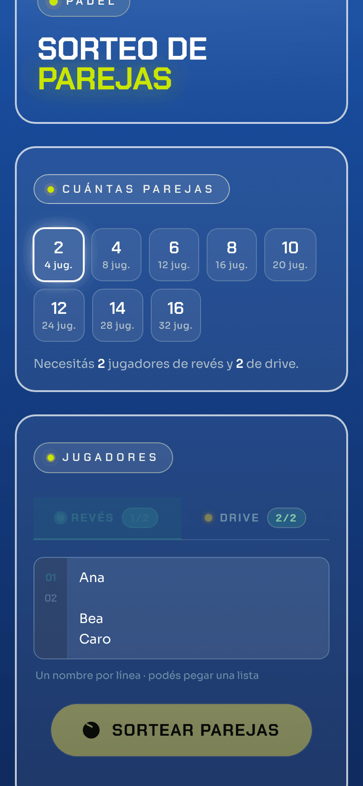
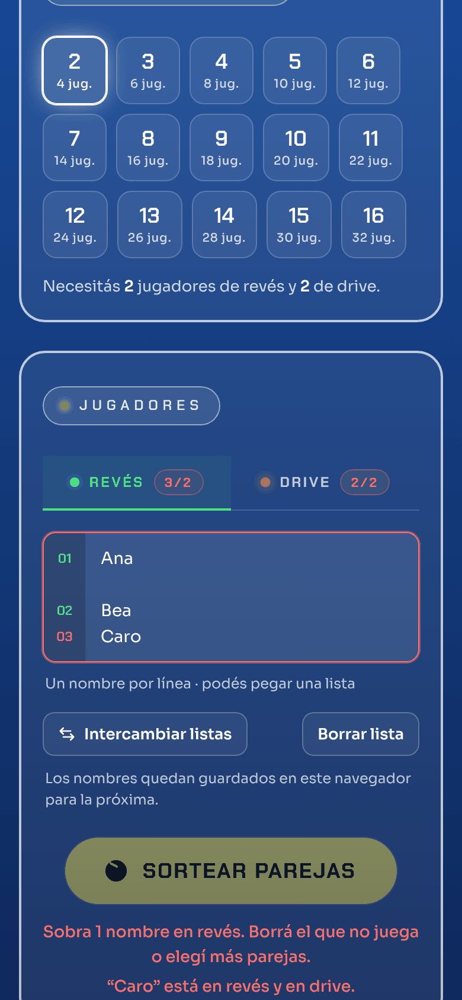
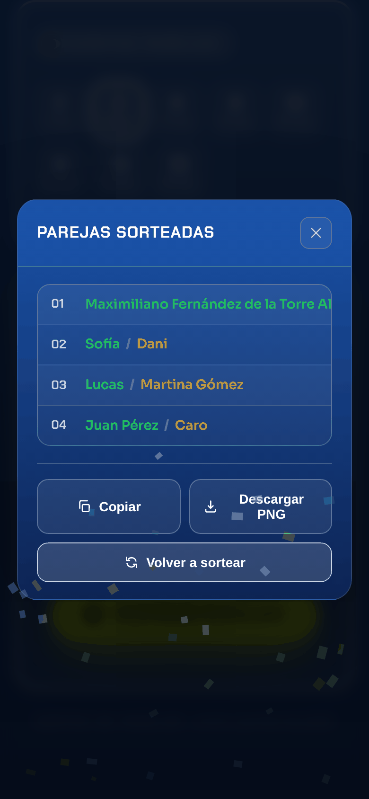
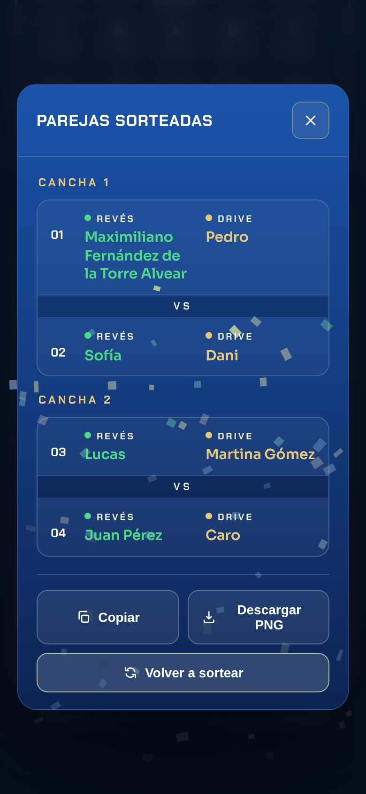
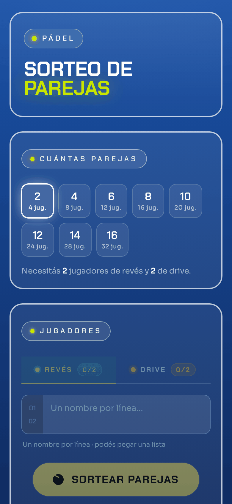

Sorteo de parejas de pádel
Antes y después
A la izquierda está la versión publicada hoy (index.html) y a la derecha la versión con todas las mejoras de la revisión (index-v2.html). Las dos funcionan: podés escribir nombres y sortear en cada una.
Probalas en vivo
Cambios visuales
Textos de ayuda, pestaña inactiva y placeholder al 30-40 % de blanco. Se leen mal al sol.
Todos los textos secundarios suben a 55-78 % y la ayuda pasa de 11 a 12 px.
Verde #22C55E y naranja #F0A500, con poco contraste sobre el azul.
Verde #4ADE80 y amarillo #FBBF24, más claros. Se mantiene la misma idea de colores.
Cada pareja en una línea, con los nombres largos cortados con "…". Revés y drive se distinguen solo por el color.
Cada nombre en su columna con la etiqueta REVÉS o DRIVE, y los nombres largos bajan de renglón.
Un nombre largo baja de renglón y los números de la izquierda quedan corridos.
Cada nombre ocupa un solo renglón y, si es muy largo, se desplaza de costado, así el número siempre coincide.
Durante el sorteo gira el botón entero.
Gira solo la pelotita.
El "¡Ya!" dura 150 ms y casi no se ve.
El "¡Ya!" queda 800 ms en pantalla.
El foco del teclado queda detrás de la ventana.
El foco entra a la ventana, no se escapa con Tab y vuelve al botón al cerrar. La X es más grande (40 px).
No responden a las flechas. En el celular, tocar una pestaña abre el teclado solo.
Se cambian con ← → Inicio Fin. En pantallas táctiles el teclado no se abre hasta que tocás el cuadro.
Sin ícono ni descripción en la pestaña ni en WhatsApp.
Ícono de pelota, color de barra del navegador y título y descripción para la vista previa del link.
Puede dibujarse antes de que carguen las fuentes. Sin leyenda de colores.
Espera a las fuentes, usa los colores nuevos y agrega la leyenda REVÉS / DRIVE.
La descripción dice "equilibrado". Al copiar se usa × y en pantalla /.
La descripción dice "al azar" y el texto copiado usa / como en pantalla.
Errores corregidos y funciones nuevas
Una línea vacía entre dos nombres bloquea el botón de sortear.
Las líneas vacías no cuentan y la numeración las saltea.
Los que sobran se ignoran sin aviso, y un repetido entre ellos bloquea sin decir cuál es.
Todos los nombres llevan número. Los que sobran se marcan en rojo y abajo dice cuántos sobran.
"Ana" en revés y en drive se sortea igual.
Se marca en rojo y abajo dice "Ana está en revés y en drive".
Solo el contador se pone rojo, a veces en la pestaña que no estás viendo.
Debajo del botón aparece cada problema con el nombre y qué hacer, y cuántos nombres faltan.
Lista de parejas, los cruces se arman a mano.
Resultado agrupado por cancha (Pareja 1 vs Pareja 2). Con cantidad impar, la última pareja espera turno. También en el texto copiado y en la imagen.
Al recargar la página se pierde todo.
Los nombres y la cantidad de parejas quedan guardados en el navegador.
Cierra y abre la ventana, y puede repetir las mismas parejas.
Sortea de nuevo en la misma ventana y evita repetir las parejas del sorteo anterior.
Solo pares: 2, 4, 6… 16.
Cualquier número de 2 a 16.
Para empezar de nuevo hay que borrar a mano.
Botones para intercambiar las listas de revés y drive, y para borrar la lista (pide un segundo toque para confirmar).
El confeti cae igual después de cerrar.
Cerrar cancela el sorteo.
Después de las 21 h el archivo sale con la fecha de mañana.
Usa la fecha local.
La imagen se arma al tocar el botón y Safari puede rechazar el pedido.
La imagen se prepara apenas aparece el resultado, así compartir sale en el mismo toque.
Si el navegador no deja usar el portapapeles, no pasa nada.
Prueba otra forma de copiar y, si tampoco puede, avisa.
Los números son los de la revisión de código. Quedó afuera el punto 27 (usarla sin internet como app), porque necesita archivos aparte y conviene hacerlo cuando la versión nueva reemplace a la actual.
Capturas en un celular (390 px)
Cargando jugadores, con un nombre largo


Errores en la lista: una línea vacía, un nombre de más y "Caro" en los dos lados


Resultado del sorteo


Pantalla inicial
